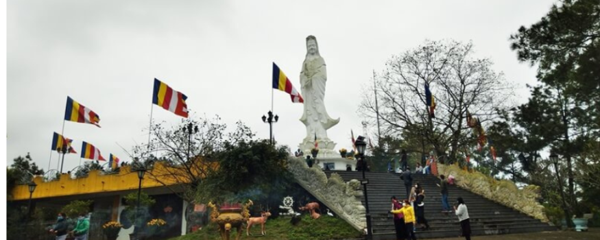
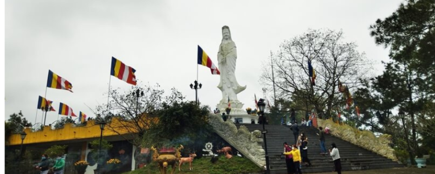
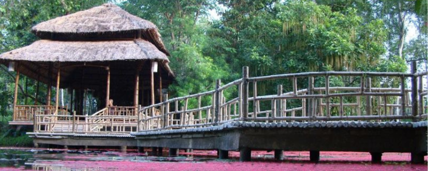
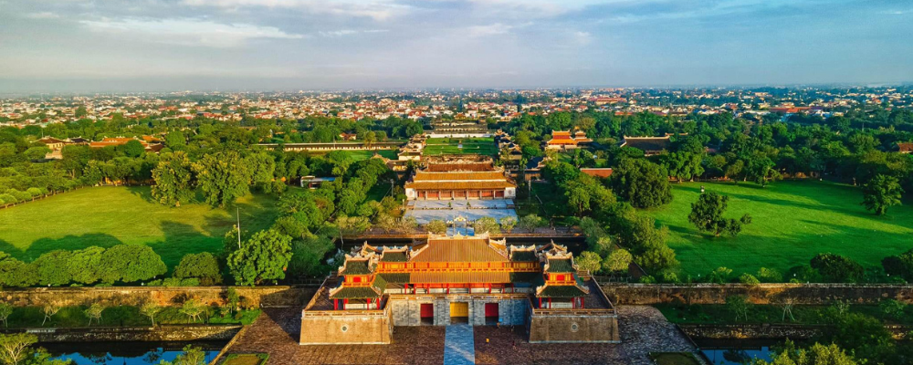
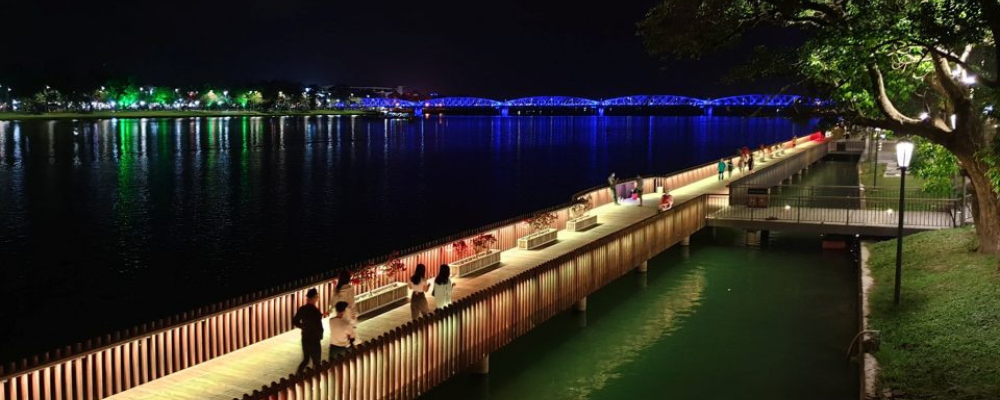

GIỚI THIỆU TỔNG QUAN VỀ HUẾ
Thành phố Huế nằm ở miền Trung Việt Nam, thuộc tỉnh Thừa Thiên Huế. Về vị trí địa lý:
- Phía Bắc: Giáp tỉnh Quảng Trị.
- Phía Nam: Giáp tỉnh Quảng Nam và thành phố Đà Nẵng.
- Phía Tây: Giáp dãy Trường Sơn và biên giới với Lào.
- Phía Đông: Giáp biển Đông.
Huế nằm bên bờ sông Hương, cách biển khoảng 14 km về phía đông, và cách Đà Nẵng khoảng 100 km về phía nam. Thành phố này nằm ở vị trí giao thoa giữa hai miền Bắc và Nam Việt Nam, có khí hậu nhiệt đới gió mùa, đặc trưng bởi mùa mưa và mùa khô rõ rệt.
Huế, một thành phố nằm ở miền Trung Việt Nam, nổi tiếng với bề dày lịch sử và văn hóa phong phú, là một trong những điểm du lịch hấp dẫn nhất cả nước. Thành phố này từng là kinh đô của triều đại nhà Nguyễn (1802-1945), và được UNESCO công nhận là Di sản Văn hóa Thế giới vào năm 1993.


 



HỆ THỐNG CHÙA CHIỀN TẠI HUẾ
Chùa Thiên Mụ
Chùa Thiên Mụ là ngôi chùa cổ kính và linh thiêng nhất ở Huế, nằm bên bờ sông Hương. Điểm nhấn của chùa là tháp Phước Duyên, cao 7 tầng, mang tính biểu tượng của Huế.
Chùa Huyền Không Sơn Thượng
Nằm ẩn mình giữa núi non, Chùa Huyền Không Sơn Thượng mang phong cách thiền tịnh với không gian yên bình và gần gũi với thiên nhiên. Chùa có cảnh quan đẹp và là nơi nhiều người tìm đến để thiền định.

Chùa Từ Đàm
Là một trong những ngôi chùa nổi tiếng ở Huế, Từ Đàm gắn liền với phong trào chấn hưng Phật giáo và có vai trò quan trọng trong lịch sử Phật giáo Việt Nam. Chùa có kiến trúc giản dị nhưng trang nghiêm.
Chùa Từ Hiếu
Từ Hiếu là ngôi chùa cổ có lịch sử lâu đời và cũng là nơi an nghỉ của nhiều vị thái giám triều Nguyễn. Không gian chùa thanh tịnh, yên bình và được bao quanh bởi những cây xanh cổ thụ.
Chùa Phật Đứng
Chùa Phật Đứng không chỉ là một địa điểm tâm linh quan trọng mà còn là một điểm đến thu hút du khách từ khắp nơi trên thế giới. Với không gian yên bình và tươi đẹp, chùa mang đến cho người ta cảm giác thanh thản và an yên.

Chùa Thiền Lâm
Chùa Thiền Lâm có phong cách kiến trúc độc đáo, chịu ảnh hưởng từ Phật giáo Nam Tông Thái Lan. Chùa có tượng Phật lớn với tư thế đứng uy nghi, được gọi là chùa Phật Đứng.

Chùa Diệu Đế
Chùa Diệu Đế là một ngôi chùa lớn, có lịch sử gắn liền với triều Nguyễn. Đây cũng là nơi tổ chức nhiều hoạt động Phật giáo quan trọng trong khu vực.

Chùa Tường Vân
Nằm ở ngoại ô Huế, chùa Từ Vân được bao quanh bởi không gian thiên nhiên và là nơi thích hợp để hành thiền và tịnh tâm.
DI TÍCH LỊCH SỬ
Đại nội Huế
Đây là quần thể di tích lịch sử lớn nhất của Huế, bao gồm Kinh thành, Hoàng thành và Tử Cấm thành. Đại Nội là nơi ở và làm việc của các vua nhà Nguyễn. Kiến trúc mang phong cách cổ điển với hệ thống cung điện, lăng tẩm, đền đài nguy nga và hoành tráng. Đây là Di sản Văn hóa Thế giới được UNESCO công nhận.
Điện Hòn Chén
Điện Hòn Chén là một trong những di tích tôn giáo đặc biệt, nơi thờ Mẫu Thượng Ngàn. Đây cũng là nơi tổ chức lễ hội Hòn Chén nổi tiếng, một sự kiện văn hóa tâm linh đặc sắc của người dân Huế.
Đàn Nam Giao
Đàn Nam Giao là nơi các vị vua nhà Nguyễn thực hiện lễ tế trời đất, cầu mong quốc thái dân an. Đàn được xây dựng theo kiến trúc cổ kính với ba tầng đại diện cho Trời, Đất và Nhân.
Chợ Đông Ba
Chợ Đông Ba là một trong những khu chợ lớn và nổi tiếng nhất ở thành phố Huế, đồng thời là một biểu tượng văn hóa và thương mại quan trọng của cố đô.

Ga Huế
Ga Huế là một trong những ga tàu hỏa chính của Việt Nam, tọa lạc tại trung tâm thành phố Huế. Đây là một công trình kiến trúc có giá trị lịch sử và là điểm giao thông quan trọng trong hệ thống đường sắt Bắc - Nam.

Văn Thánh Huế
Văn Thánh là nơi thờ Khổng Tử và các bậc tiên hiền Nho giáo. Đây là nơi lưu giữ các giá trị văn hóa giáo dục và là nơi tổ chức các kỳ thi Nho học dưới triều Nguyễn.
.jpg)
Cữu vị thần công
Cố đô Huế nổi tiếng với những bảo vật cung đình, là minh chứng cho sự tồn tại hơn 140 năm của vương triều Nguyễn. Trong số những báu vật ấy, đáng chú ý bậc nhất là 9 khẩu súng thần công đặt trước cửa Ngọ Môn.
Nhà Bác Hồ
Đây là ngôi nhà Chủ tịch Hồ Chí Minh đã sống khi theo gia đình vào Huế lần thứ I từ 1895 – 1901.

Hồ Quyền
Một trong những công trình kiến trúc độc đáo chỉ riêng Việt Nam có. Được xây dựng dưới thời vua Minh Mạng, nơi đây là đấu trường của những cuộc tử chiến giữa voi và hổ. Việc tổ chức các cuộc đấu giữa voi và hổ xuất phát từ nhu cầu rèn luyện tượng binh(quân voi), một trong những binh chủng lợi hại quân đội xứ Đàng Trong.
CẢNH ĐẸP THIÊN NHIÊN
Phá Tam Giang
Đây là một hệ đầm phá lớn nhất Đông Nam Á, trải dài từ huyện Quảng Điền, Hương Trà đến Phú Vang. Phá Tam Giang nổi tiếng với cảnh đẹp hoang sơ, đặc biệt là vào lúc hoàng hôn, khi mặt trời lặn xuống và ánh sáng vàng cam phủ lên mặt nước.
Đèo Hải Vân
Đèo Hải Vân, còn được gọi là "Thiên hạ đệ nhất hùng quan," là một trong những con đèo nổi tiếng và đẹp nhất Việt Nam. Nằm trên dãy núi Bạch Mã, đèo Hải Vân là ranh giới tự nhiên giữa tỉnh Thừa Thiên Huế và thành phố Đà Nẵng.

Đầm Lập An
Nằm giữa vịnh Lăng Cô và đèo Hải Vân, đầm Lập An nổi tiếng với vẻ đẹp thanh bình của mặt nước phẳng lặng và dãy núi Bạch Mã hùng vĩ phía xa. Khi thủy triều rút, bãi cát trắng nổi lên, tạo ra khung cảnh tuyệt đẹp.

Núi Bạch Mã
Nằm trong Vườn quốc gia Bạch Mã, ngọn núi này cao khoảng 1.450m và được bao phủ bởi rừng nhiệt đới. Bạn có thể trekking lên đỉnh Bạch Mã để ngắm nhìn toàn cảnh Huế và các thác nước hùng vĩ như thác Đỗ Quyên, thác Ngũ Hồ.

Hồ Thủy Tiên
Nơi đây từng là một khu du lịch sinh thái với các công trình kiến trúc độc đáo, nhưng hiện tại nó nổi tiếng hơn với vẻ đẹp hoang tàn và kỳ bí, thu hút nhiều du khách thích khám phá sự bí ẩn và khác lạ.
Sông Hương
Sông Hương là biểu tượng của Huế, nổi tiếng với dòng nước trong xanh và thanh bình. Cảnh sắc hai bên bờ sông, đặc biệt vào mùa thu và lúc hoàng hôn, tạo nên vẻ đẹp lãng mạn khó quên.

Đồi Vọng Cảnh
Đồi Vọng Cảnh là một trong những điểm ngắm cảnh đẹp nhất ở Huế. Từ đây, bạn có thể chiêm ngưỡng vẻ đẹp của sông Hương, các lăng tẩm cổ kính và khu rừng xanh tươi bao quanh.

Đầm Chuồn
Đầm Chuồn thuộc hệ đầm phá Tam Giang, nổi tiếng với khung cảnh thiên nhiên tuyệt đẹp. Vào lúc bình minh hoặc hoàng hôn, mặt nước trong veo phản chiếu bầu trời tạo nên cảnh sắc thơ mộng, thu hút nhiều nhiếp ảnh gia đến ghi lại khoảnh khắc.
Hồ Truồi
Hồ Truồi nằm dưới chân dãy núi Bạch Mã, không chỉ là nơi cung cấp nước cho khu vực mà còn là điểm du lịch với khung cảnh thiên nhiên trong lành, tươi mát. Bạn có thể đi thuyền trên hồ để ngắm cảnh núi non hùng vĩ.
HỆ THỐNG SUỐI VÀ BÃI TẮM

Suối nước nóng Thanh Tân
Khu du lịch suối nước nóng Thanh Tân không chỉ thu hút du khách bởi nguồn nước nóng tự nhiên quý giá mà còn bởi khung cảnh thiên nhiên tươi đẹp và nhiều dịch vụ chăm sóc sức khỏe.

Bãi tắm Lăng Cô
Lăng Cô là một trong những vịnh biển đẹp nhất Việt Nam, với bãi cát dài trắng mịn và nước biển xanh ngắt. Cảnh quan ở đây là sự kết hợp tuyệt đẹp giữa núi, biển và đầm phá.

Suối Voi
Suối Voi nổi tiếng với dòng nước mát lạnh, trong xanh, chảy qua những ghềnh đá lớn. Nơi đây có các hồ nước tự nhiên lớn, thích hợp cho việc tắm suối, đặc biệt là "hồ Voi", được đặt tên theo tảng đá lớn có hình thù giống con voi.
Suối Mơ
Suối Mơ là một trong những suối nước nổi tiếng ở Huế với khung cảnh thiên nhiên tuyệt đẹp, nước suối mát lạnh và trong lành, chảy qua những tảng đá lớn, tạo thành các thác nước nhỏ.

Thác A Nor
Thác A Nor bao gồm ba tầng thác lớn, nước đổ mạnh từ trên cao xuống, tạo thành các hồ nước mát lạnh. Xung quanh thác là rừng cây xanh mướt và không gian yên bình.

Bãi tắm Thuận An
Thuận An là bãi biển đẹp với bờ cát trắng mịn, nước biển trong xanh và không gian rộng rãi. Đây là điểm đến yêu thích của cả người dân địa phương và du khách.

Bãi biển Cảnh Dương
Cảnh Dương là một bãi biển hoang sơ với cát trắng và nước biển trong xanh. Bãi biển khá yên tĩnh, thích hợp cho những ai muốn tránh xa sự ồn ào và đông đúc.

Suối Tiên
Suối Tiên là một dòng suối nhỏ với làn nước trong xanh, chảy qua các tảng đá lớn. Cảnh quan thiên nhiên xung quanh rất đẹp và hoang sơ.
KIẾN TRÚC NGHỆ THUẬT
Cầu Trường Tiền
Cầu Trường Tiền bắc qua sông Hương, nối liền hai bờ của thành phố Huế. Cầu được xây dựng vào cuối thế kỷ 19 và đã trở thành biểu tượng của thành phố.
Kinh Thành Huế
Kinh Thành Huế là một hệ thống thành trì và cung điện được xây dựng vào đầu thế kỷ 19 dưới triều đại Nguyễn. Kinh Thành bao gồm Hoàng Cung, các cung điện, đền đài và các công trình phụ trợ.
Cầu gỗ Lim
Cầu Gỗ Lim là một cây cầu nổi tiếng nằm ở thành phố Huế, Việt Nam. Đây là một trong những cây cầu gỗ có giá trị lịch sử và văn hóa đặc biệt tại khu vực này.
Trường Quốc Học
Trường Quốc Học Huế là một trong những ngôi trường trung học phổ thông lâu đời và danh tiếng nhất ở Việt Nam, gắn liền với lịch sử giáo dục của đất nước.
Nhà Hàng Sông Hương
Nhà Hàng Sông Hương nổi bật với thiết kế kiến trúc hình búp sen, một biểu tượng văn hóa và tinh thần đặc trưng của Việt Nam.
Cung Anh Định
Cung An Định kết hợp giữa phong cách kiến trúc truyền thống Việt Nam và ảnh hưởng của kiến trúc phương Tây.
Bến Tòa Khâm
Bến Tòa Khâm là một trong những công trình nổi bật ở Huế, liên quan đến lịch sử và kiến trúc của thành phố này. Đây là một địa điểm quan trọng trong lịch sử phát triển đô thị của Huế.
HỆ THỐNG LĂNG TẨM
Lăng Gia Long
Là lăng mộ của vua Dục Đức, vị hoàng đế thứ tư của triều đại Nguyễn.
Lăng Minh Mạng
Là lăng mộ của vua Minh Mạng, vị hoàng đế thứ hai của triều đại Nguyễn.

Lăng Thiệu Trị
Là lăng mộ của vua Thiệu Trị, vị hoàng đế thứ ba của triều đại Nguyễn.
Lăng Dục Đức
Là lăng mộ của vua Dục Đức, vị hoàng đế thứ tư của triều đại Nguyễn.

Lăng Đồng Khánh
Là lăng mộ của vua Đồng Khánh, vị hoàng đế thứ năm của triều đại Nguyễn.
Lăng Khải Định
Là lăng mộ của vua Khải Định, vị hoàng đế thứ 12 của triều đại Nguyễn.